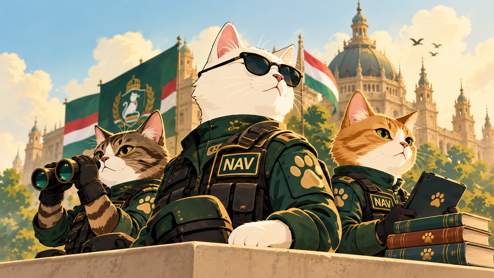

01
Szövegszerkesztés
Formázd meg a műveleti jelentést CSS-sel.
MEOW műveleti jelentés
A Nemzeti Alomvisszaszerzési Végrehajtóhivatal bevetési egysége sikeresen biztosította a területet.
Célpont: 12 zsák prémium macskaalom.
- A címet tedd sötétzölddé és 32px méretűvé.
- A normál szöveg legyen 18px és sorkizárt.
- A fontos sort tedd félkövérré, dőltté és arany színűvé.
- A címet alakítsd csupa nagybetűssé
text-transformsegítségével.
02
Kép beszúrás
Szúrj be egy képet relatív elérési úttal.
Ide kerüljön a kép: ../assets/meow_hero.png
- Használj
<img>elemet. - Az
srclegyen../assets/meow_hero.png. - Adj értelmes
altszöveget. - CSS-ben állíts be maximum 700px szélességet és
width: 100%-ot.
03
Kép igazítása
A kép már be van szúrva, most igazítsd középre.

- Tedd a képet blokkszintűvé:
display: block. - Állítsd a vízszintes margókat automatikusra:
margin: 0 auto. - Adj neki
width: 60%-ot. - Próbáld ki a
margin-left: autoésmargin-right: autokülönbségét is.
04
Background-position gyakorlás
Mozgasd a háttérképet a megfigyelőablakban.
MEOW megfigyelőállás
- Állítsd be háttérképnek a
../assets/meow_hero.pngfájlt. - Ne ismétlődjön:
background-repeat: no-repeat. - Próbáld ki:
left top,center center,right center. - Végül használd a
background-size: coverértéket.
+
Bónusz: dobozmodell
Adj egy tetszőleges feladatdoboznak padding, margin, border és border-radius értékeket. Ezután módosítsd a szélességét, és figyeld meg a box-sizing hatását.